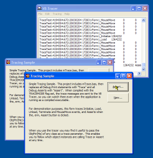
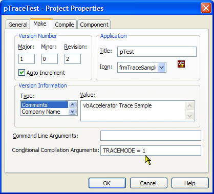

mTrace.bas (1K)
mTrace.bas (1K)
 Trace Sample Application (14K)
Trace Sample Application (14K)
 VB5 Tracer Utility (92K)
VB5 Tracer Utility (92K)
 VB6 Tracer Utility (84K)
VB6 Tracer Utility (84K)
 Bugs: 1 / 1
Bugs: 1 / 1
 Issues: 0 / 0
Issues: 0 / 0
 Questions: 0 / 0
Questions: 0 / 0
 3 Feb 2003
3 Feb 2003
First Posted
 Subclassing Without The Crashes
Subclassing Without The Crashes

RunTime Debug Tracing
Watch and log debug messages whilst running VB applications as executables.
Sometimes you want to be able to view trace messages when running your application outside the VB IDE. Perhaps something slightly different happens as an Executable; or you may be running something that's not so easy to debug, such as subclasses, callback procedures and custom COM implementations. Whilst VB provides an App.LogEvent method which supposedly caters for this, it isn't very good. This article provides an easy way to send debug messages to a remote trace application for your viewing and logging pleasure.
Getting Started
This project consists of two parts:
- A Trace.bas module, which you incorporate into your project. This module is 3k in size and provides alternatives to VB's Debug.Print and Debug.Assert which additionally trace the information out to a trace tool.
- The VBTracer utility, which receives messages from the Trace.bas module at debug time or runtime and displays them in a textbox, optionally allowing all messages to be logged out to a file.
Using the tracing function is simple: fire up VBTracer (it can sit in your SysTray the whole time if you want) and then whenever an application uses the Trace.bas module's methods, it will pick up the messages.
Using mTrace.base
To try it out in your project, do the following:
- Add mTrace.bas to the project.
- Do a global search and replace on "Debug.Print" and replace it with "Trace" in the project. Note that whilst Debug.Print allows the use of VB's weird print delimiters like the semi-colon, "Trace" only allows commas as delimiters. So you may have to fix up one or two of the statements.
- Do a global search and replace on "Debug.Assert" and replace it with "Assert". Note that the mTrace.bas Assert statement also lets you provide some print messages along with the assertion, which is very helpful in the Trace itself.
- Go to the project's Properties and choose the Make tab. Under the Conditional Compilation Settings,
add the text "TRACEMODE = 1.":

This is required because mTrace.bas has been written to allow it to be compiled out if you so desire. - Run the project in VB and as an executable. You will see all your Trace and Assert messages written out to the VBTracer window.
Once you've got it up and running, you can experiment with VBTracer's options. The View->Configure menu option allows you to set which trace items are shown, how many lines are displayed in the Tracing window and whether the trace details are written to a file or not.
Why Do I Have To Change My Nice Debug.Print Messages?
It would be nice if you could simply replace VB's Debug object with your own version which overrides the Print and Assert methods. However, unfortunately you can't do that because for the usual legacy reasons Print is a reserved word in Visual Basic. Also, the Debug object is slightly unusual, in that it isn't a normal COM object. Even if you add a module named "Debug" to a Visual Basic project, and provide an Assert method you can't call it using Debug.Assert as the standard one overrides it.
How It Works
If you take a look at mTrace.bas you will see the code is very simple. The first time Trace or Assert is called, it checks to see if VBTracer is running by checking all of top-level windows. If it is, it caches the window handle and uses that to send a WM_COPYDATA message for each Trace or Assert message to the handle. The WM_COPYDATA message in Windows is extremely useful as it allows you to send data safely across processes with very little overhead.
VBTrace pretty much does the reverse. When it starts, it sets a Window property using the SetProp API to allow mTrace.bas modules to find it. Then it starts checking for WM_COPYDATA messages using a Subclass (the subclassing code is from the Subclassing and Timer Assistant, and is compiled into the application for ease of use). Internally, the application uses a few tricks to cache all the messages it gets and add them to the text box for display as quickly as possible. A high-performance string buffer allows all the debug messages to be stored separately to the logging to screen, so it can continue independently of whether the window is ready to receive them. Then messages are added to the TextBox using the TextBox control's EM_REPLACESEL message to ensure you don't have to continually allocate large strings just to append new text to the control. Another thing that's useful is to use the EM_GETSEL and EM_SETSEL messages rather than VB's SelStart and SelLength properties: in VB these are limited to integer values, which is only a limitation of the TextBox on Win9x systems. Under NT/2000/XP the TextBox has effectively unlimited capacity and using the message interface allows you to take advantage of this. If you're interested in working with large capacity TextBoxes then the code is worth checking out.
On The Subject of Stack Traces
It is possible to generate stack traces from a VB runtime. However, you're probably not going to like it. The technique is described in the May 2002 issue of Visual Studio Magazine in the article Get Debug Info From Production Apps by Dan Fergus. It uses a host of techniques from Matt Curland's excellent "Advanced Visual Basic 6" book to allow VB to determine the program's Instruction Pointer, Stack Pointer and Base Pointer and then use dbghelp.dll to translate these into readable descriptions (assuming that you have generated a Symbolic Debug Info file (PDB) when compiling the application - which means it doesn't work for P-Code apps).
To use the code you need to include a class and 7 modules into the VB code you want stack tracking for, although they are all quite small. Then provided you are running outside the IDE, the VB code is compiled as Native Code and a PDB file has been created you can get a stack trace at any time by calling m_oSymbols.GetCallStack(). As far as I can tell it seems to work, but it is a shame it is impossible to isolate the code out of your project (I tried, but without success).
The world would have been a much nicer place if VB provided an App.StackTrace method which worked at any time, but there you go. Actually, the world would have been better if the App object did anything properly!